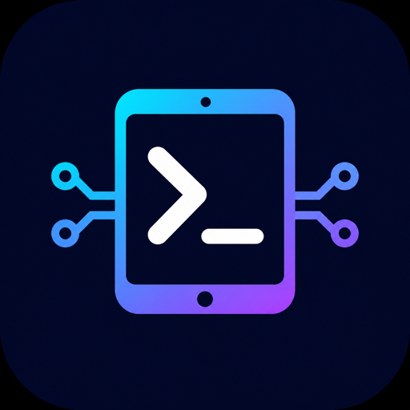

iOS Ports
Native arm64 ports of Node.js 24 and developer CLIs for rootless jailbroken iPhones and iPads.
Add to SileoSource: https://nikovonlas.github.io/ios-ports/

Native arm64 ports of Node.js 24 and developer CLIs for rootless jailbroken iPhones and iPads.
Add to SileoSource: https://nikovonlas.github.io/ios-ports/